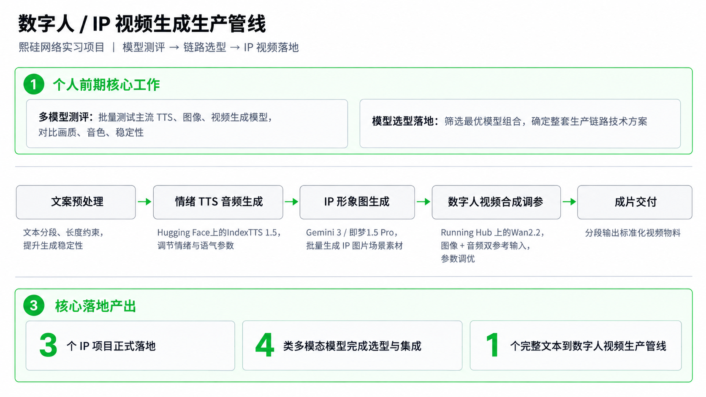
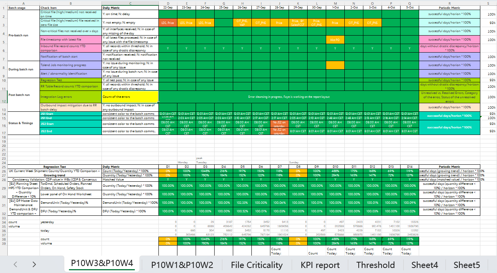
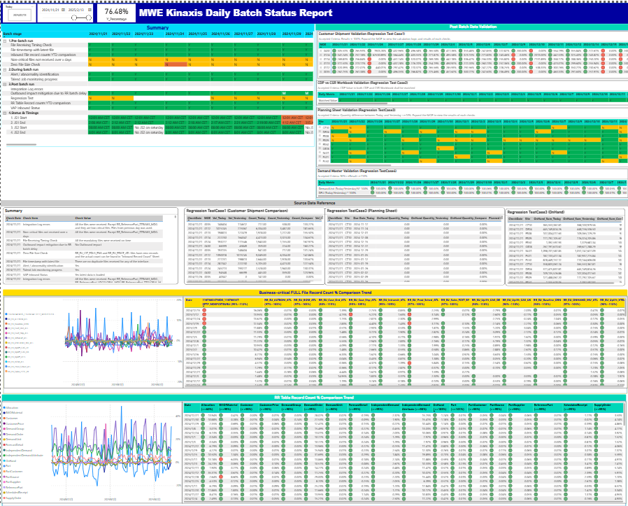

01 / 自主原型 · 可体验
Investment X Buddy
把研究目标、计划、数据与报告放在同一线程。我借助 AI 编程工具完成原型，探索证据溯源与人机协同。
阶段：原型迭代，尚未形成真实用户验证指标。
彭远超 / AI 应用与数据运营
从业务问题出发，用 Agent、模型评测与数据治理连接技术和实际工作。在四段实习中，积累从流程设计、工程实现到结果验证的实践。
用三个案例，呈现应用搭建、质量评测与数据分析能力。
01 / 自主原型 · 可体验
把研究目标、计划、数据与报告放在同一线程。我借助 AI 编程工具完成原型，探索证据溯源与人机协同。
阶段：原型迭代，尚未形成真实用户验证指标。
02 / OPPO · 模型评测
以人工标注建立评测基准，分析错误案例并迭代 Prompt；交付可复核报告与对比表。
记录结果：低质卡通动漫维度准确率 89% → 95%。

03 / OPPO · 数据分析流程
梳理指标口径与分析链路，将自然语言提问、取数、计算和归因报告串联为 Agent 流程。
展示：流程设计与脱敏截图。
从业务自动化、数据治理到 AI 应用，逐步连接数据与业务流程。
2026 年
参与壁纸评级、指标异动分析 Agent 与 Push 实验分析；关注评测方法、指标口径和异常诊断。
评测与实验案例 →Agent 流程 →2025.12–2026.03
开发多语种商品参数提取与品牌校正流程，以 Schema、规则和 LLM 处理海外数据库标准化。

2025.10–2025.12
比较音频、图像与视频生成模型，探索从文案到数字人成片的生产流程，沉淀可复用方案。

2024.11–2025.09
用 Power BI 支持跨部门查询，用 Python 自动化重复任务。经历记录记载月均节省 80+ 人时，公开页面未提供完整工时测算明细。


金融科技与计算机复合背景，为业务理解与技术实现提供基础。
金融硕士 · 计量经济与数据科学方向
2025.09–2027.06（预计）
金融科技本科 · 计算机科学与技术辅修
2021.09–2025.06 · 专业前 10%
FinAgent：ReAct 与 RAG 支持多资产查询和问答。
ETF 智能投资策略研究：国家级大创项目，参与图像预处理与特征提取。
国家级大学生创新创业训练计划项目 ×2；粤港澳金融数学建模三等奖；美国大学生数学建模竞赛 Honorable Mention；挑战杯市级银奖。